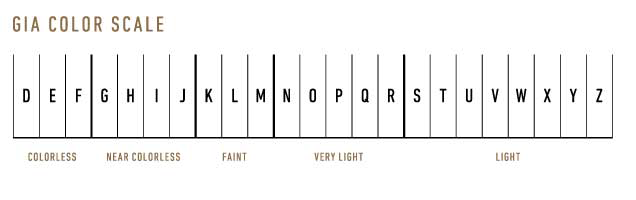

GIA将钻石（彩钻除外）的无色程度等级用D-Z来划分，如果单看一颗钻石的颜色，
是无法得到准确分级的，要通过受控的照明和精确的观察条件下与比色石进行比对，从而才能对一颗钻石进行颜色分级。

许多钻石之间的颜色差异细微得让非专业人士难以分辨。但这些细微的差异却会造成钻石品质和价格上的极大差别。
在 GIA 创立 D（无色）至 Z（淡黄或淡褐色）的成色等级系统之前，市场上出现过多种等级系统， 例如字母（ A、B、C，多个 A 表示最好的钻石）、 阿拉伯数字（0、1、2、3）还有罗马字母（I、II、III），加之描述用语也不统一，例如“宝石蓝”或者“蓝白色”。所有这些分级系统就造成了不一 致和不准确的结果。鉴于这样的状况，GIA 的专家们决定创立一个全新不同的成色等级系统。因此，决定由通常来说与顶级品质毫无关联的D字母开 始对颜色进行分级。
颜色是对钻石品质有很直观的影响，颜色同时对钻石价格的影响也很大。